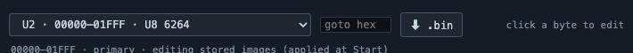
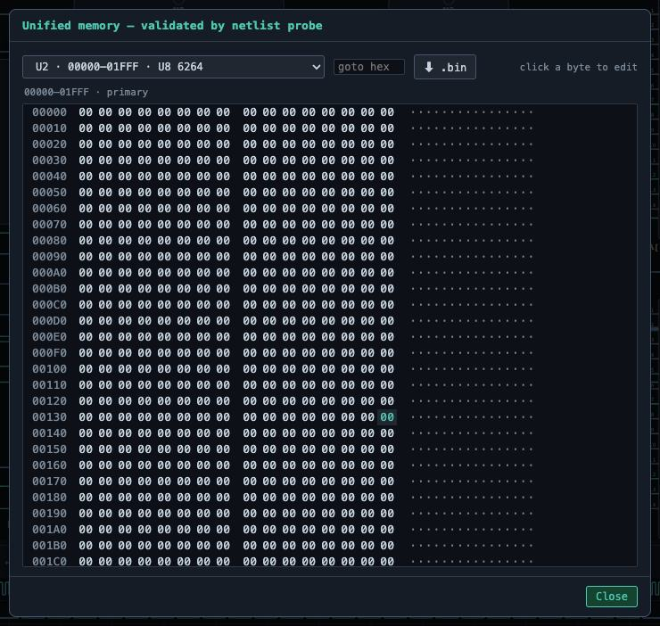
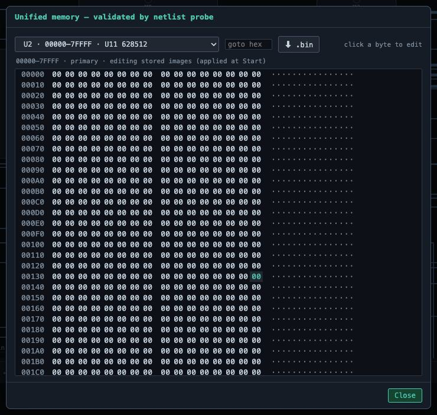
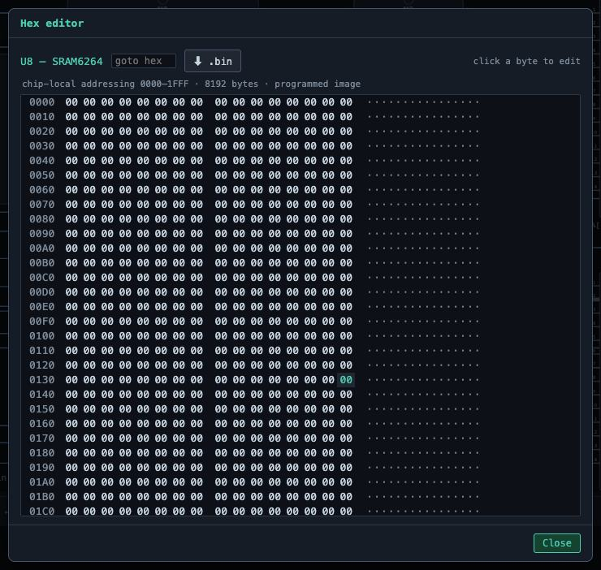
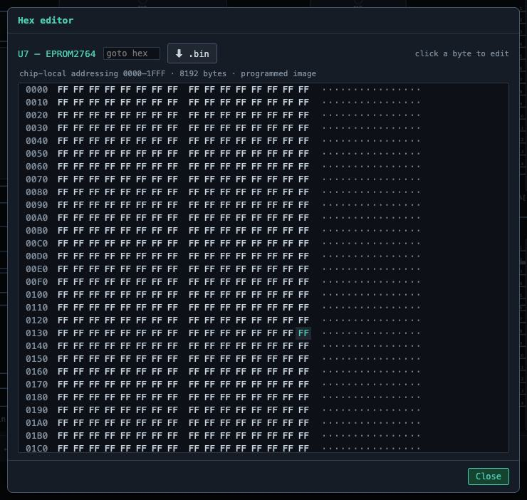

Hex editors at two altitudes, and an address map that is measured from your gates rather than declared.
Most simulators ask you to declare where memory lives. This one measures it: the
analyzer drives the CPU's address pins through your real decode gates and records which chip answers,
for every window in the megabyte. What you see is what your wiring actually does — including the mirrors
that partial decoding creates, which is exactly the lesson cheap kits taught by accident.
Unified memory
One hex editor across the whole address space, writing through the proved map.
The range dropdown lists every window the prober found, marking aliases and the reset vector.
The unified memory view — One hex editor across the whole address space, writing through the proved map.

Where everything answers — The range dropdown lists every window the prober found, marking aliases — the mirrors partial decoding creates — and the reset vector.

Memory while running — The view is live: watch the stack change as CALLs push, or find the byte your program just wrote.

A full PC memory map — On the XT board the same prober finds 512K of RAM, the video window, the option ROM and the BIOS — each measured, not declared.
Per-chip memory
Double-click a memory chip for its own bytes, always addressed from zero — the
chip's point of view, with no knowledge of where the board maps it. Edits to a ROM are kept when you
press Start; pressing Assemble reclaims it for the code pane.

Chip-local hex editor — Double-click a memory chip for its own bytes, always addressed from zero — the chip's point of view, with no knowledge of where the board maps it.

The ROM, byte by byte — The assembled program as it sits in the EPROM — including the far jump at the reset vector that starts the machine. Hand edits here are kept when you press Start; pressing Assemble reclaims the ROM for the code pane.